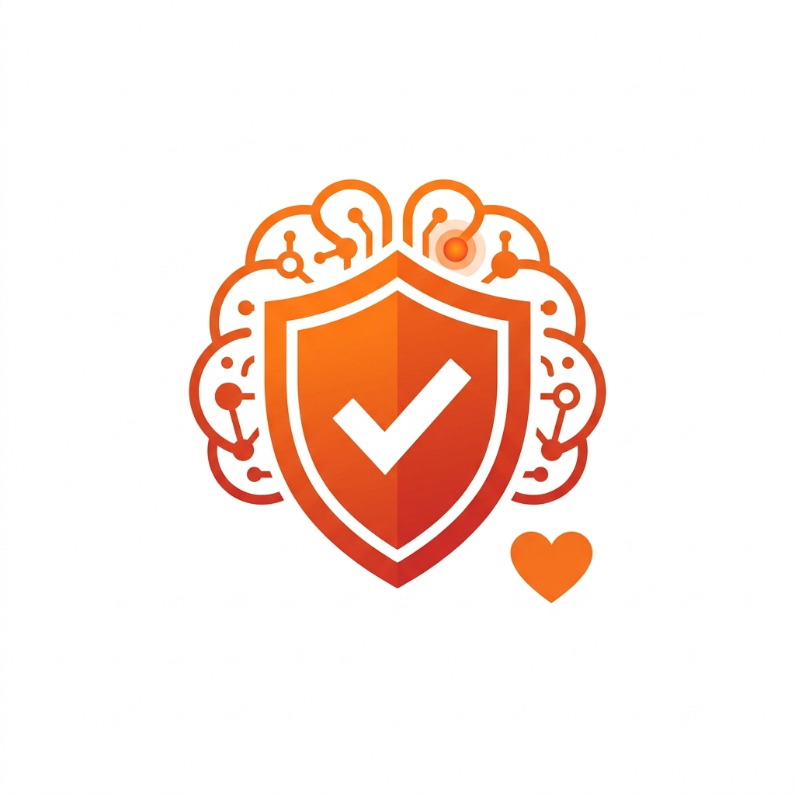
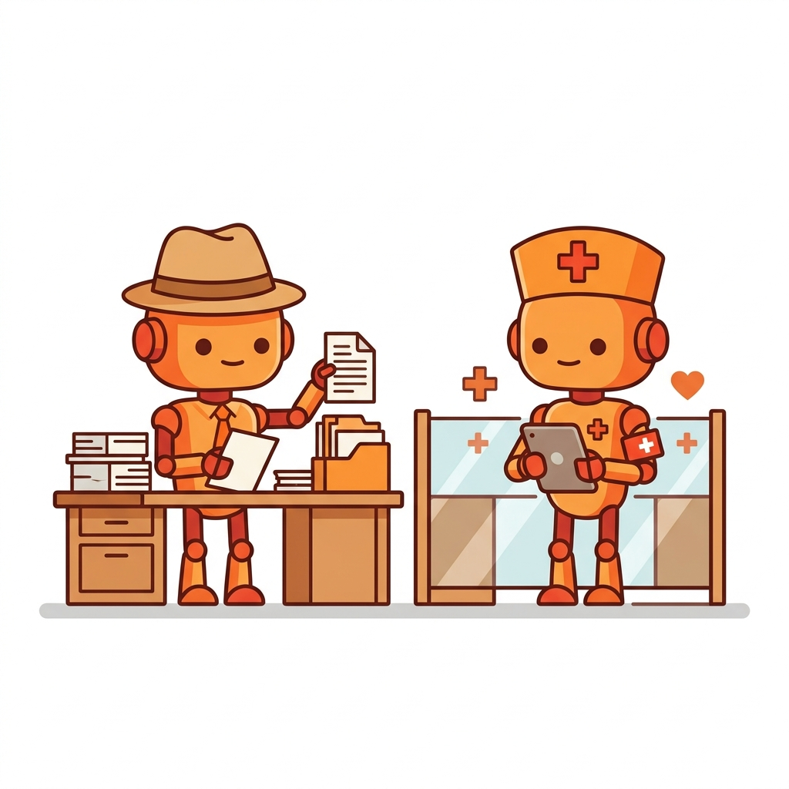
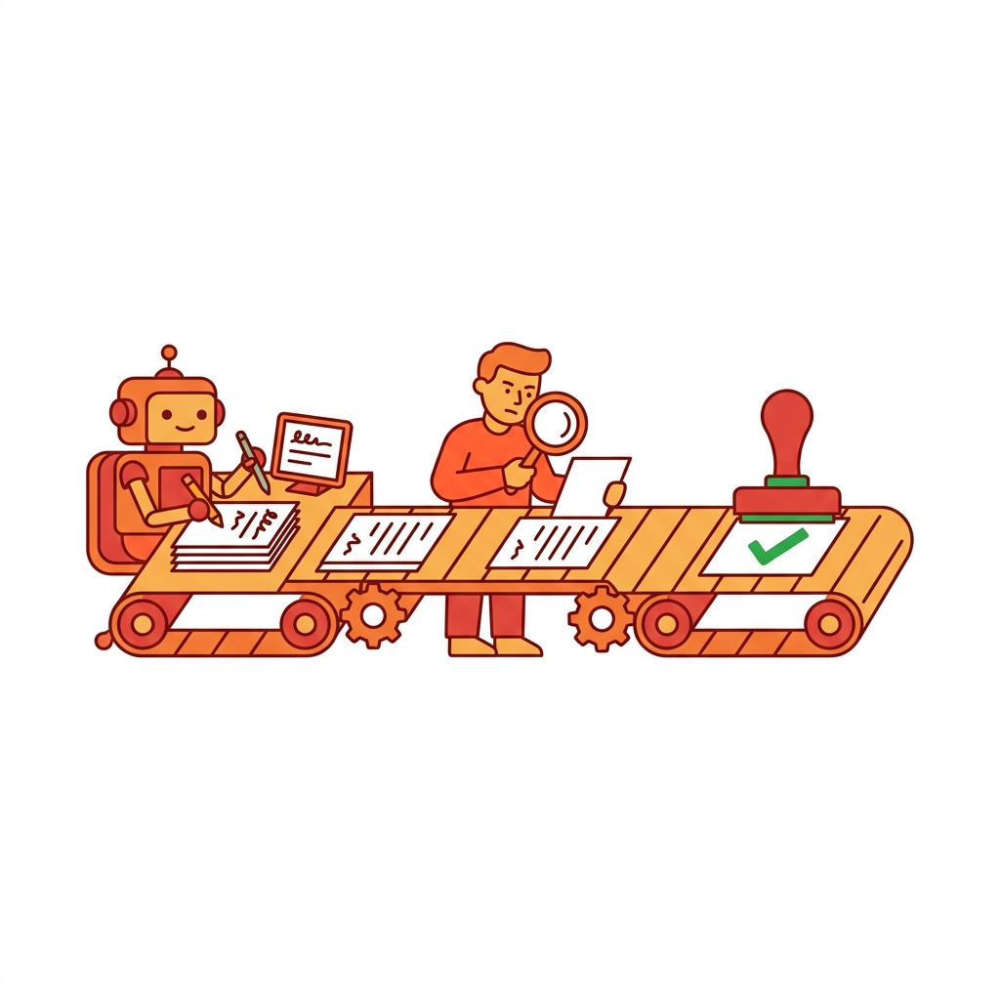

「AIは怖い」の正体
医療現場にAIを導入しようとすると、ほぼ必ず出てくる言葉がある。
「AIが間違えたらどうするの？」
この質問の裏にあるのは、精度への懸念ではない。今のAI（大規模言語モデル）の精度は十分に高い。書類の種別判定や患者名の読み取りなら、人間と同等かそれ以上の正確さがある。
本当の壁は、「AIが間違えたとき、誰が責任を取るのか」という信頼の問題だ。

精度99%のAIでも、100件に1件は間違える。一般企業なら「1%のエラーは許容範囲」かもしれない。だが医療では、その1件が患者の命に関わる可能性がある。だからスタッフは慎重になる。それは正しい感覚だ。
「AIの精度を上げる」のではなく、「AIが間違えても大事故にならない設計」をする。これが医療AIの最も重要な原則だ。
設計原則 — 「事務員AI」と「医療AI」を分ける

おひさま会では、AIの役割を明確に2つに分けている。事務的な仕分け作業をやるAIと、医学的な判断を支援するAI。この線引きが、現場の信頼を得る鍵だった。
| 事務員AI | 医療AI |
|---|
| やること | 書類の仕分け・患者名の読取り・データ入力 | 検査結果の要約・SOAP記録の補助 |
| 判断の重み | 間違いに気づけば、訂正できる（確認の仕組みが前提） | 間違えると診療に影響する |
| 安全設計 | 確信度が低ければ「未確認」に回す | 必ず医師が確認してから反映 |
| 導入ハードル | 低い（すぐ始められる） | 高い（運用実績を積んでから） |
重要なのは、最初は事務員AIだけを導入すること。
FAXの仕分け、保険証の判別、問い合わせの分類など、これらは「間違えても、気づいて直せる」業務だ。ここでAIの信頼実績を積み上げてから、徐々に医療寄りの業務に広げていく。
おひさま会の運用：患者が特定できない場合や検問に引っかかった場合は「未確認／要確認」へ回し、人が見ます。通ったものは仕組みが貼付を進めますが、止める道は残しています。
実践 — 承認パイプラインを入れる

AIの出力をそのまま最終結果にしない。これが医療AIで最も大切なルールだ。AIが下書きを作り、人間が確認してから実行する。この一手間が、事故を防ぎ、信頼を守る。
📋 3つのパターン
パターン①：検問つきで仕組みが進める（事務作業）
AIがFAXの書類種別・患者名を判定
▼
確信度が高い → 電子カルテへ貼付（仕組みが進める）
▼
確信度が低い → 「未確認」フォルダへ（人が後で確認）
書類の仕分けは、間違いに気づけば訂正できる業務なので、確信度が高ければ仕組みが先に進める。ただし安全弁として「未確認」ルートを必ず用意する。
パターン②：下書き→確認→送信（対外コミュニケーション）
AIが問い合わせ内容を分類
▼
AIが回答案を下書き（Draft）
▼
担当者が確認・編集 → 送信
対外的なやり取りは、AIの下書きをそのまま送らない。敬語がおかしい、事実関係が微妙に違うといった、AIの「惜しいミス」は信用問題になる。
パターン③：下ごしらえ→医師確認→完成（医療書類）
前回の書類を引用して下ごしらえ（下書き作成）
▼
「中断保存」状態でストップ
▼
医師が内容を確認 → 「完成」ボタン
医療書類は絶対に「完成」を自動化しない。処方内容、診断名、患者情報など、すべて医師の目を通してから確定する。AIは「下ごしらえ」までが仕事だ。
信頼の積み上げ方
医療現場でAIの信頼を勝ち取るには、時間がかかる。近道はない。
✅ 信頼を積むための5つのルール
- 最初はリスクの低い業務から始める — FAXの仕分けや通知など、間違えても影響が小さい業務で実績を作る
- 間違いを隠さない — AIのエラーをログに記録し、「こういう間違いがありました」と透明に報告する
- 安全弁を必ず設計に組み込む — 「確信度が低ければ人に回す」「完成は人がボタンを押す」
- 導入前に現場と「ルール」を決める — 「AIが○○をやります。△△は人がやります」を明文化する
- 小さな成功を可視化する — 「今月AIが処理した件数」「削減できた時間」を数字で見せる
やってはいけないこと：「AIすごいでしょ？全部任せてください」と言うこと。医療スタッフはAIに仕事を「奪われる」ことを恐れているのではない。「AIの間違いの責任を自分が取らされる」ことを恐れている。その不安に寄り添う設計が、信頼の出発点になる。
まとめ — 「AIは実行に使う。判断は人間。」
医療AI導入のポイントをまとめる。
- 壁は精度ではなく信頼 — 99%の精度があっても、1%の責任を誰が取るかが問題
- 事務員AIから始める — 間違えても気づいて直せる業務で信頼を積む
- 承認パイプラインを必ず入れる — AI下書き → 人間確認 → 実行
- 「完成」は人間が押す — 医療書類の最終確定をAIに任せない
AIは優秀なアシスタントであって、意思決定者ではない。この原則さえ守れば、医療現場でもAIは大きな味方になる。